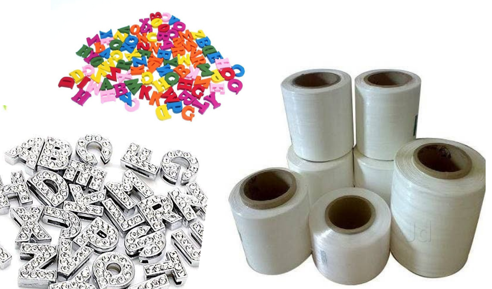

We started Project Parivartan in the year 2016, as a financial aid to our project, Project DESI. Under Project Parivartan, a variety of hand-made dog accessories, including dog collars, leashes and sweaters are manufactured and sold under the brand name - BeDesi. This range of products is paw-friendly and also ensures great quality and better durability. These products are available in attractive colours and all sizes. Our manufacturers belong to an underprivileged community in Delhi NCR. The women of this community manufacture our BeDesi products not only with love, but also with due attention and perfection. A part of the revenue generated from the sale of these products goes to our women "Auntrepreneurs", and the other part is utilized to sustain the project. While workplace discrimination is still prevalent and deep-rooted in most areas of our country, our project aims at uplifting and empowering these women, and helping them to become self-reliant, and transform into the bread-earners for themselves and their families, and ensure a quality standard of living for them. The women associated with Project Parivartan have been benefitted not only in realizing their abilities, but also in creating an environment where women prove to be an effective human resource.
India is home to around 30 million stray dogs. These poor little beings are often subjected to abuse and brutal killing by the people due to insensitivity and lack of awareness amongst them. Improper care and negligence of our street buddies has lead to a rise in various issues such as overpopulation of stray dogs, dog bites, rabies and various other diseases. We, at Enactus MLNC, work towards creating a safe and better environment for the stray dogs through our Project DESI. DESI stands for Duty to Empathize, Sterilize and Immunize stray dogs. Sadism and cruelty by humans, often lead to unjustified killing and scarred lives of this breed. Seeing them as mere nuisance and not caring for their well being is costing these poor strays their lives. Enactus MLNC believes that street dogs deserve as much love and care as any other living being. Hence ‘Duty to Empathize’. Sterilization and Immunization are the most humane and potent ways to control their rising population, and spreading of diseases through them. Hence ‘Duty to Sterilize and Immunize’. The team of Project DESI has collaborated with various Animal Welfare NGOs including Friendicoes, Paws and SSGACC, and has conducted sterilization and immunization drives in various parts of Delhi NCR. Through the DESI model, we intend to make people aware of their misery and make them understand that affection and compassion for these fellow beings are the foundation of a better world, besides being the first steps to make peaceful co-existence possible.


© by Enactus Motilal Nehru College